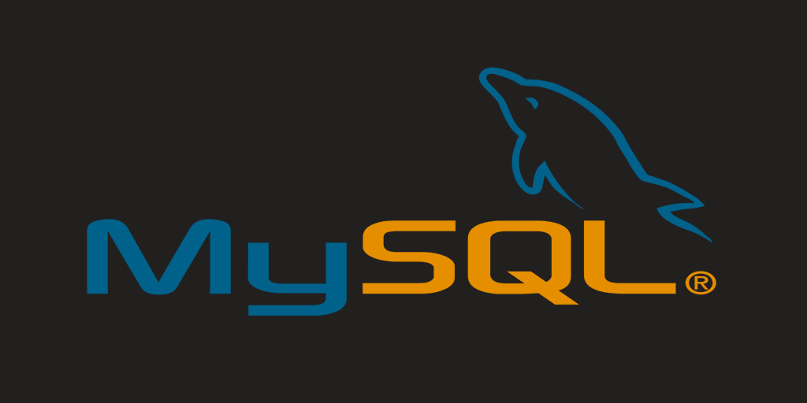
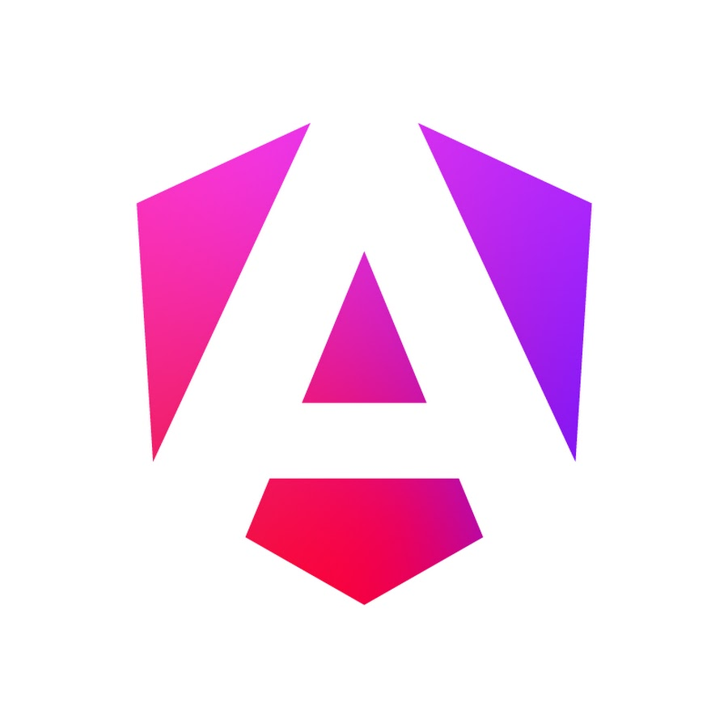
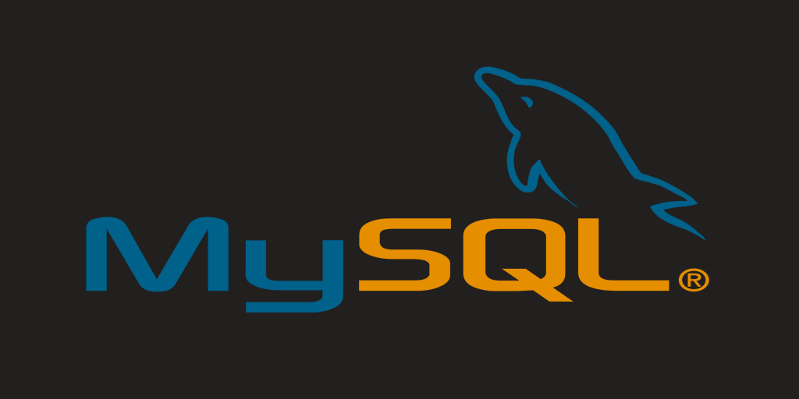
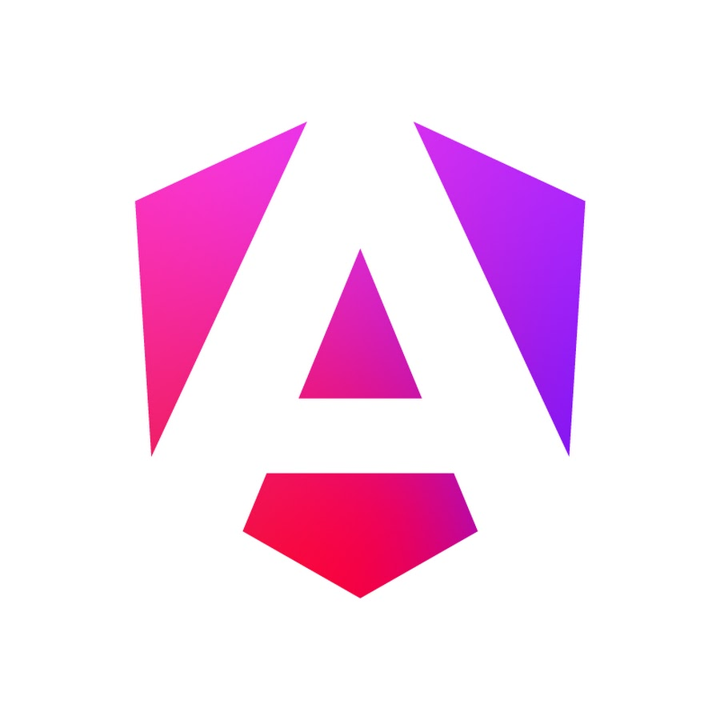

Sobre Mim
Meu nome é Marcus Augusto, tenho 36 anos moro em Pernambuco, sou pai de um jovem de 16 anos e arrimo de família. Venho de pública, sou técnico de segurança do trabalho pelo Grau Técnico. Atualmente, estou focado em estudar e aprimorar minhas habilidades, busco criar novas oportunidades na minha vida e alcançar novos horizontes profissionais.
Acredito firmemente que o crescimento pessoal e profissional é contínuo, e que a educação é o principal caminho para alcançar esse progresso. Comecei minha jornada de trabalho aos 14 anos e, desde então, acumulei uma vasta experiência prática. Passei por diferentes setores, o que me permitiu desenvolver habilidades cruciais, como a resolução de problemas, o trabalho em equipe e a capacidade de adaptação e mudanças. Sou conhecido por ser uma pessoa atenciosa, comprometida e motivada pela qualidade do trabalho.
Valorizo a estabilidade e a segurança no ambiente de trabalho e sigo procedimentos e diretrizes com precisão. Tenho uma abordagem detalhista e metódica, o meu aprendizado é otimizado através de práticas concretas e repetitivas. Minha motivação para o trabalho faz com que eu seja diligente e preciso, sempre buscando cumprir prazos e garantir a qualidade dos resultados.
Desenvolvi habilidades cruciais como resolução de problemas, trabalho em equipe e adaptação a mudanças. Sou conhecido por minha abordagem atenciosa, comprometida e orientada para a qualidade. Valorizo a estabilidade e a segurança no ambiente de trabalho e sigo procedimentos e diretrizes com precisão.
Possuo experiência significativa em áreas como instalação e manutenção de equipamentos de telecomunicações, cabeamento estruturado, e segurança no trabalho. Trabalhei com a instalação de roteadores, antenas, e realização de manutenção preventiva e corretiva. Também tenho experiência em suporte técnico e administração de sistemas pois passei por um estágio voluntário e utilizei de tecnologias como GitHub, HTML5, CSS, JavaScript, TypeScript, Angular 2/CLI, e MySQL. Acompanhei projetos com metodologias como Scrum e Kanban, e entreguei soluções com alta eficiência.
Recentemente, iniciei uma transição de carreira para a área de tecnologia. Sempre tive um grande interesse por tecnologias desde pequeno mesmo nunca tendo contato, e esse desejo se tornou ainda mais pessoal para mim, pois tenho familiares com necessidades especiais e desejo utilizar a tecnologia para criar soluções que possam melhorar a qualidade de vida deles e de outros em situações similares. Acredito firmemente que a tecnologia pode ser uma grande transformadora, não só da minha vida, mas também das vidas daqueles que se beneficiam das inovações. Estou investindo meu tempo e conhecimento nesse novo caminho, com a esperança de impactar positivamente a sociedade e as empresas.
Tecnologias que Conheço

 


